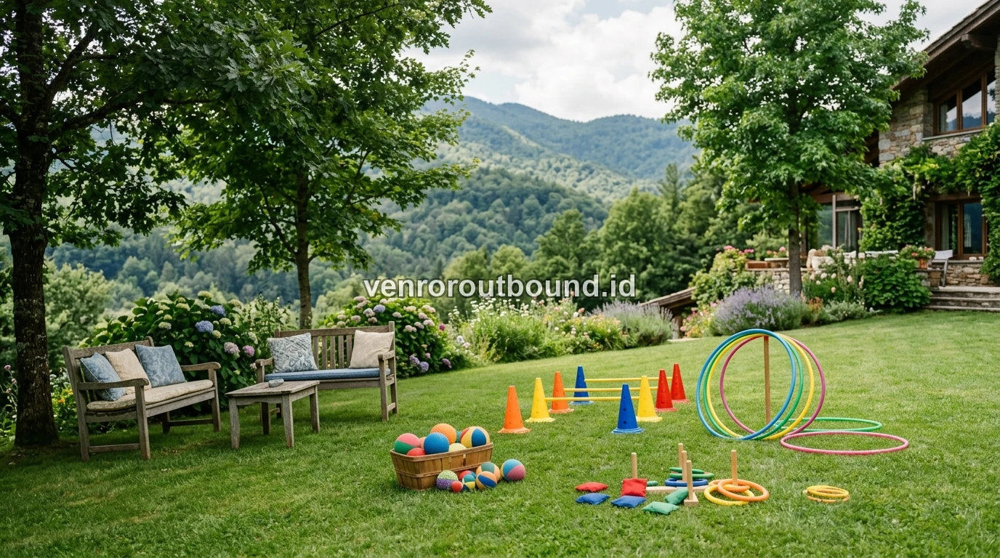

1. Pentingnya Menyesuaikan Aktivitas dengan Karakteristik Usia Peserta
Memilih paket outbound keluarga wajib mempertimbangkan aspek keberagaman usia peserta. Pastikan memilih provider yang menyediakan variasi game fisik rendah risiko namun memiliki nilai kebersamaan tinggi.
Mengorganisasi acara reuni keluarga besar atau temu kangen keluarga lintas kota memiliki tingkat kompleksitas psikologis dan teknis yang unik. Berbeda dengan outbound korporat yang umumnya diikuti oleh peserta dengan rentang usia kerja yang relatif homogen, peserta outbound keluarga terdiri dari spektrum usia yang sangat majemuk: balita yang masih aktif mengeksplorasi lingkungan, anak usia sekolah dasar, remaja yang membutuhkan tantangan interaktif, orang tua yang mengutamakan relaksasi, hingga kakek-nenek yang membutuhkan kenyamanan ekstra.
Kesalahan fatal yang sering dilakukan oleh panitia pemula adalah mengadopsi modul permainan fisik yang terlalu berat atau terlalu kekanak-kanakan. Ketika simulasi permainan terlalu menuntut fisik, peserta lansia dan orang tua akan merasa terasing karena hanya menjadi penonton pasif di pinggir lapangan. Sebaliknya, jika permainan terlalu monoton, generasi muda akan cepat merasa jenuh dan kembali menyendiri bersama gawai mereka.
Oleh karena itu, pendekatan cerdas dalam memilih program adalah mengedepankan modul inklusif (*universal design game*) yang menggabungkan keceriaan gerak ringan, interaksi verbal hangat, dan strategi kelompok tanpa kontak fisik berbahaya.
Tujuan utama dari pertemuan keluarga di alam terbuka bukanlah untuk mencetak atlet atau memaksakan kedisiplinan militer, melainkan membangun kembali jembatan komunikasi yang sempat terputus akibat jarak dan kesibukan. Ketika setiap generasi merasa dihargai dan memiliki peran dalam permainan, energi positif akan mengalir secara alami, menciptakan atmosfer penuh tawa dan kebahagiaan.

Membangun Harmoni & Hubungan Erat Keluarga Besar: Tips Gathering Berkesan
Strategi mencairkan suasana kumpul keluarga agar tidak kaku dan penuh keakraban antar generasi.
2. Matriks Pembagian Aktivitas Berdasarkan Rentang Usia Anggota Keluarga
Untuk membantu panitia memetakan porsi kegiatan secara objektif, berikut adalah tabel matriks pembagian aktivitas berdasarkan kelompok generasi:

3. Bedah Kebutuhan Spesifik untuk Setiap Kelompok Generasi
Memahami psikologi dan kapasitas fisik tiap rentang usia akan memudahkan panitia serta fasilitator dalam mengeksekusi alur kegiatan di lapangan secara harmonis:
A. Kelompok Anak-anak (Usia 5 – 12 Tahun)
Fokus pada motorik kasar, eksplorasi warna, dan stimulasi keceriaan spontan. Anak-anak sangat menyukai permainan yang menggunakan bola-bola warna-warni, hula hoop, dan balapan estafet sederhana bersama sepupu sebaya. Mereka cepat bosan terhadap instruksi verbal yang terlalu panjang, sehingga fasilitator harus menggunakan pendekatan demonstrasi visual yang atraktif.
- Simulasi bola berantai dengan pipa plastik aman
- Perburuan harta karun mini (treasure hunt) di area taman yang ramah anak
- Pemberian hadiah kecil penyemangat di akhir sesi permainan
B. Kelompok Remaja (Usia 13 – 18 Tahun)
Remaja membutuhkan panggung untuk mengekspresikan kreativitas, dinamika logika, dan kerja sama tim. Mereka sangat antusias jika diberi peran sebagai komandan kelompok, perancang yel-yel kreatif, atau eksekutor strategi pemecahan masalah bersama sepupu.
- Simulasi problem solving logika regu dan koordinasi cepat
- Tantangan estafet koordinasi visual lintas kelompok keluarga
- Pembuatan konten video kreatif dan foto bersama untuk media sosial
C. Kelompok Dewasa (Usia 19 – 55 Tahun)
Kelompok orang tua dan dewasa muda memegang peranan penting sebagai penyeimbang dan penyemangat suasana. Modul permainan difokuskan untuk melepas penat rutinitas kerja harian serta memperkuat komunikasi interpersonal antar pasangan dan saudara kandung.
- Simulasi kekompakan pasangan dan kebersamaan keluarga inti
- Permainan membangun menara kelompok dengan koordinasi tali
- Sesi sharing santai dan refleksi kebersamaan di bawah pohon rindang
D. Kelompok Lansia (Usia 56 Tahun ke Atas)
Menghormati keterbatasan fisik para sesepuh dengan tetap melibatkan mereka secara aktif melalui peran kehormatan, permainan duduk yang menyenangkan, dan stimulasi memori keluarga yang hangat.
- Tebak kata berantai dan kuis memori sejarah silsilah keluarga
- Peran sebagai penasihat taktik dan juri penilaian yel-yel tim
- Tempat duduk santai yang nyaman di gazebo dekat arena utama
4. Parameter Keselamatan dan Aksesibilitas Lapangan Kegiatan
Aspek keselamatan (*safety standard*) adalah prioritas mutlak yang tidak boleh dikompromikan dalam penyelenggaraan acara keluarga besar. Panitia wajib memperhatikan parameter teknis berikut saat memilih venue:
- Pemeriksaan Kontur Lapangan: Pastikan lapangan rumput alami telah diinspeksi secara menyeluruh, bebas dari kerikil tajam, pecahan kaca, semut api, atau lubang tersembunyi yang berisiko membuat peserta tersandung.
- Perlindungan dari Cuaca & Suhu: Sediakan kanopi peneduh, payung taman, atau pastikan lapangan memiliki pohon-pohon rindang di sekelilingnya agar peserta lansia dan balita terhindar dari paparan terik matahari berlebih.
- Kesiapsiagaan Tim Medis & P3K Standar: Kesiapan kotak pertolongan pertama yang lengkap dengan obat-obatan ringan seperti plester, perban elastis, antiseptik, minyak kayu putih, dan obat penurun panas anak untuk penanganan darurat cepat.
- Aksesibilitas Fasilitas Sanitasi & Ibadah: Jalur pejalan kaki menuju toilet dan mushola harus ramah lansia, tanpa undakan tangga curam atau lantai keramik yang licin.
Untuk memastikan seluruh kebutuhan permainan, peralatan audio, dan pemandu telah terintegrasi secara profesional, Anda dapat melihat informasi Paket Standard Family Gathering kami yang dirancang sesuai standar kenyamanan keluarga.

Cara Memilih Vendor Outbound yang Profesional & Aman
Daftar periksa penting sebelum menandatangani kesepakatan pengadaan acara luar ruang.
5. Kiat Komunikasi Panitia ke Seluruh Anggota Keluarga Sebelum Acara
Agar seluruh sanak saudara hadir dengan persiapan optimal dan antusiasme tinggi, panitia disarankan membagikan panduan singkat melalui grup WhatsApp keluarga satu minggu sebelum acara:
- Anjuran Pakaian: Gunakan kaos katun yang menyerap keringat, celana panjang santai/training elastis, dan sepatu kets bertelapak karet antislip. Hindari pemakaian sepatu berhak tinggi (*high heels*) atau sandal jepit yang licin di atas rumput.
- Perlengkapan Tambahan: Bawa topi pelindung matahari, kacamata hitam, pakaian ganti cadangan untuk anak-anak, handuk kecil, dan obat resep khusus bagi anggota keluarga yang memiliki riwayat kesehatan tertentu.
- Pola Pikir Acara: Tekankan bahwa tujuan utama acara adalah kebersamaan, relaksasi, dan tawa ceria, bukan ajang unjuk kekuatan fisik atau kompetisi yang memicu ketegangan emosional.
- Ketepatan Waktu: Mengingat hawa pagi di pegunungan sangat menyegarkan dan ideal untuk beraktivitas sebelum matahari terik, ingatkan keluarga untuk tiba tepat waktu sesuai jadwal briefing.
6. Ciptakan Kebersamaan Hangat Tanpa Kendala
Kunci sukses penyelenggaraan outbound keluarga terletak pada kepekaan panitia dalam memilih paket yang adaptif terhadap seluruh rentang usia. Dengan modul yang dirancang presisi dan dipandu oleh fasilitator berpengalaman, setiap anggota keluarga dari cucu terkecil hingga kakek-nenek akan pulang dengan hati yang gembira dan cerita keakraban yang melekat sepanjang masa.
Jadikan momen temu kangen keluarga berikutnya sebagai catatan sejarah keluarga yang penuh warna, tawa, dan kehangatan sejati.
Konsultasikan Susunan Acara Reuni Keluarga Anda
Butuh kustomisasi program untuk reuni keluarga Anda? Diskusikan dengan kami via WA +62 82211221909 untuk penyesuaian porsi games dan rekomendasi venue terbaik.
Hubungi Kami via WhatsAppPertanyaan Sering Diajukan (FAQ)

Arby Ardiansyah
Praktisi pengembangan SDM dan perancang program experiential learning dengan pengalaman lebih dari 8 tahun memfasilitasi ratusan kegiatan outbound korporat, BUMN, dan acara kebersamaan keluarga di seluruh Jawa Timur.